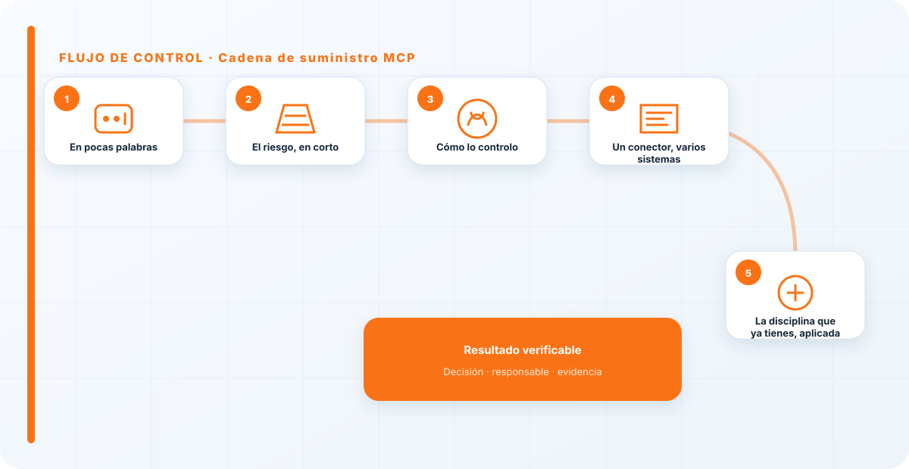
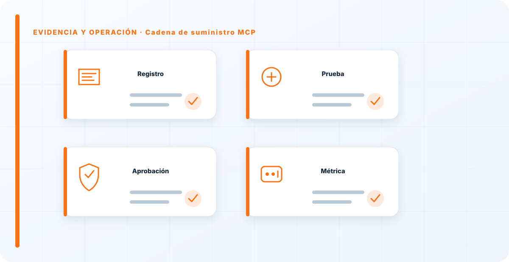

En pocas palabras
Los MCP y plugins son dependencias con acceso a tus datos, y merecen la misma disciplina de cadena de suministro que cualquier software. La particularidad es que se instalan con una ligereza que no aplicaríamos a ninguna otra dependencia de producción: se encuentra uno, se conecta y se le da acceso el mismo día. Esa facilidad no reduce el riesgo, solo lo esconde hasta que estalla.
El riesgo, en corto
Un conector se sitúa entre tu modelo y tus datos, así que un MCP malicioso o vulnerable puede filtrar información o ejecutar acciones desde una posición privilegiada. Y como es un tercero, el problema puede venir de fuera —una vulnerabilidad publicada del componente— sin que hayas tocado nada tú.
Es el mismo riesgo que cualquier dependencia con permisos, con el agravante de dónde está colocado: en el centro del flujo, viéndolo casi todo.
Cómo lo controlo
Revisión de procedencia antes de conectar, mínimo privilegio en lo que le doy acceso, inventario en el AI-BOM y revisión cada vez que se actualiza. La versión detallada de las defensas está en seguridad MCP, y cómo probarlo, en el red teaming de la cadena.
Es, otra vez, la disciplina de dependencias de siempre, aplicada a un componente que mucha gente todavía no vive como lo que es: código de terceros con acceso, corriendo en tu producción.

Un conector, varios sistemas
Hay un multiplicador que conviene tener presente: un mismo MCP suele estar conectado en varios sistemas. Si es vulnerable, no tienes un problema, tienes tantos como sitios donde lo enchufaste. Por eso el inventario no es opcional: sin saber dónde está cada conector, no puedes ni medir el alcance de una vulnerabilidad, ni desconectarlo a tiempo de todos lados.
La cadena de suministro castiga precisamente la falta de inventario: lo que no sabes que tienes, no lo puedes proteger ni retirar cuando toca.
La disciplina que ya tienes, aplicada
La buena noticia con los MCP es que no hay que inventar nada: la disciplina de gestión de dependencias que tu organización ya aplica al software sirve tal cual. Inventario, procedencia, mínimo privilegio, revisión al actualizar, vigilancia de vulnerabilidades publicadas. Todo eso ya lo haces —o deberías— con tus librerías; solo hay que extenderlo a los conectores de IA.
El problema no es de conocimiento, es de percepción: como conectar un MCP es tan fácil, no se vive como "meter una dependencia en producción" y se salta la disciplina que sí aplicarías a una librería. Cambiar esa percepción es la mitad de la solución.
Conectar un MCP es tan fácil que nadie lo vive como "meter una dependencia con acceso en producción", que es exactamente lo que es. Si no sabes quién mantiene cada conector que tienes enchufado y qué hace con lo que ve, tienes un problema de cadena de suministro esperando a manifestarse. La facilidad de conectar no reduce el riesgo, lo esconde.
Los errores que veo una y otra vez
- Conectar MCP sin revisión.
- No inventariarlos como dependencia.
- Darles acceso amplio.
- No revisarlos al actualizar.
- No saber en cuántos sistemas está cada conector.
Cómo lo llevaría a un entorno real
Cuando aterrizo cadena de suministro mcp en una organización, no empiezo por comprar una herramienta ni por redactar veinte páginas. Empiezo por dibujar qué ocurre hoy: quién solicita el cambio, quién lo aprueba, qué sistemas intervienen, qué datos cruzan el proceso y quién se entera cuando algo falla. Ese dibujo suele descubrir más problemas que cualquier checklist. En cadena de suministro, lo peligroso no es solo carecer de controles; también lo es creer que existen porque alguien los escribió una vez.
Después separo lo imprescindible de lo deseable. Lo imprescindible debe poder comprobarse: un responsable identificado, una regla clara, una evidencia fechada y un mecanismo para reaccionar. En este caso revisaría especialmente servidores MCP, manifests y tools. No me vale una respuesta del tipo «lo gestiona el proveedor» o «eso lo mira seguridad». Necesito saber qué persona toma la decisión, con qué información y dentro de qué plazo.
La implantación debe crecer con el riesgo. Un piloto interno puede funcionar con una ficha breve y una revisión manual. Un sistema que afecta a clientes, empleados, dinero o información sensible necesita segregación de funciones, pruebas independientes, monitorización y un expediente mantenido. Mi criterio es sencillo: cuanto más difícil sea deshacer el daño, más fuerte debe ser la barrera antes de producción.
Decisiones que deben quedar por escrito
Hay decisiones que no deberían vivir en una reunión ni en un mensaje de chat. Para cadena de suministro mcp dejaría documentados el alcance, los supuestos, los límites de uso, las excepciones aceptadas y las condiciones que obligan a detener o reevaluar. El documento no tiene que ser enorme, pero sí debe permitir que otra persona entienda por qué se hizo lo que se hizo.
También registraría quién puede cambiar scopes, quién valida publishers y quién recibe las alertas relacionadas con versiones. Cuando esas tres responsabilidades se mezclan, aparece el clásico problema: el mismo equipo construye, aprueba y declara que todo funciona. No siempre se puede separar por completo, sobre todo en organizaciones pequeñas, pero al menos debe existir una revisión por alguien que no dependa del éxito inmediato del despliegue.
Las excepciones merecen un tratamiento propio. Una excepción sin fecha de caducidad acaba convirtiéndose en la arquitectura real. Por eso exigiría motivo, riesgo aceptado, responsable, compensaciones, fecha de revisión y criterio de cierre. Si falta uno de esos elementos, no es una excepción gestionada; es una deuda invisible.

Un ejemplo práctico
Imaginemos que un equipo quiere incorporar cadena de suministro mcp a un servicio que ya está en producción. La propuesta promete reducir tiempos y automatizar tareas, pero utiliza componentes que cambian con frecuencia. Antes de aprobarlo, pediría una prueba limitada, un inventario de dependencias, un flujo de datos y una definición clara de qué acciones quedan fuera del alcance.
Durante la prueba recogería resultados normales y casos límite. No solo miraría si funciona; comprobaría qué ocurre cuando faltan datos, cambia una versión, se pierde conectividad, llega una entrada manipulada o un usuario intenta superar sus permisos. Ahí es donde se ve si el diseño aguanta. En muchas pruebas felices todo parece seguro porque nadie ha intentado romper la hipótesis de partida.
Si los resultados son aceptables, la salida a producción tendría condiciones: versión fijada, configuración aprobada, logs disponibles, responsables de guardia, procedimiento de rollback y revisión tras las primeras semanas. Si alguno de esos elementos no existe, prefiero retrasar el despliegue. Un día de demora suele ser más barato que investigar después un comportamiento que nadie puede reconstruir.
Qué evidencias guardaría
Para demostrar que el control funciona conservaría evidencias que cuenten una historia completa, no capturas sueltas. La historia debe enlazar necesidad, decisión, implementación, prueba y operación. En cadena de suministro mcp eso incluye como mínimo la ficha del activo, el diagrama vigente, la configuración aprobada, el resultado de las pruebas y el registro de cambios.
No guardaría información por acumular. Si los logs contienen prompts, documentos, datos personales o secretos, aplicaría minimización, control de acceso y retención. La evidencia debe ayudar a investigar y auditar sin crear una segunda fuga de información. Es frecuente endurecer el sistema principal y dejar un repositorio de evidencias abierto a demasiadas personas.
- Propietario y finalidad de cadena de suministro mcp, con fecha de revisión.
- Inventario de servidores MCP, manifests y dependencias asociadas.
- Criterios de aceptación y resultados sobre tools y scopes.
- Configuración efectiva, versión y aprobación del cambio.
- Alertas, incidentes, excepciones y acciones correctivas cerradas.
Señales de que el control no está funcionando
El primer síntoma es que nadie sabe responder con rapidez quién es el responsable. El segundo es que la documentación describe una versión distinta de la que está operando. El tercero es que las alertas existen, pero llegan a un buzón que nadie revisa. Cuando aparecen esos tres síntomas, el problema no es tecnológico: el control se ha desconectado de la operación.
También desconfío de las métricas demasiado perfectas. Cero incidentes, cero excepciones y cien por cien de cumplimiento pueden significar excelencia, pero con frecuencia significan que no estamos mirando. Prefiero indicadores que enseñen tendencia: tiempo de corrección, antigüedad de excepciones, cobertura de pruebas, cambios sin revisión y reincidencias.
Por último, revisaría el comportamiento después de cada cambio significativo. En IA, una actualización de modelo, dataset, prompt, herramienta, permiso o proveedor puede alterar el riesgo sin cambiar el nombre del servicio. Si el proceso solo reevalúa cuando se crea un proyecto nuevo, se quedará ciego durante la mayor parte de la vida útil.
Mi criterio de cierre
Considero que cadena de suministro mcp está razonablemente controlado cuando el equipo puede explicar el proceso sin depender de una sola persona, reconstruir una decisión con evidencias y detener el servicio sin improvisar. No busco perfección documental; busco que la organización pueda tomar decisiones repetibles bajo presión.
El cierre no consiste en marcar todas las casillas. Consiste en demostrar que los riesgos relevantes tienen propietario, que los controles se prueban y que las desviaciones producen una acción. Si la evidencia no cambia ninguna decisión, probablemente estamos generando burocracia. Si una decisión importante no deja evidencia, estamos creando fragilidad.
Este enfoque es el que intento mantener en toda CyberLibrary AI: explicar el control de forma que lo entienda negocio, pero con suficiente profundidad para que arquitectura, seguridad, auditoría y operaciones puedan aplicarlo de verdad.
Referencias y marcos relacionados
Contenido educativo y técnico. No sustituye asesoramiento jurídico ni una auditoría formal.